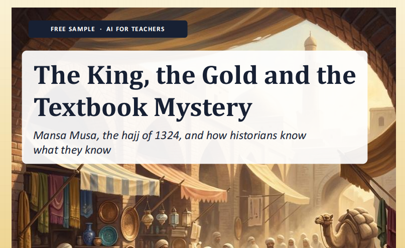

Grade 8 · History · Worksheet pack
The King, the Gold and the Textbook Mystery
Mansa Musa's journey to Mecca, with one reading at three reading levels, a sorting activity, a quiz and an answer key. It teaches students to ask how we know what we know.